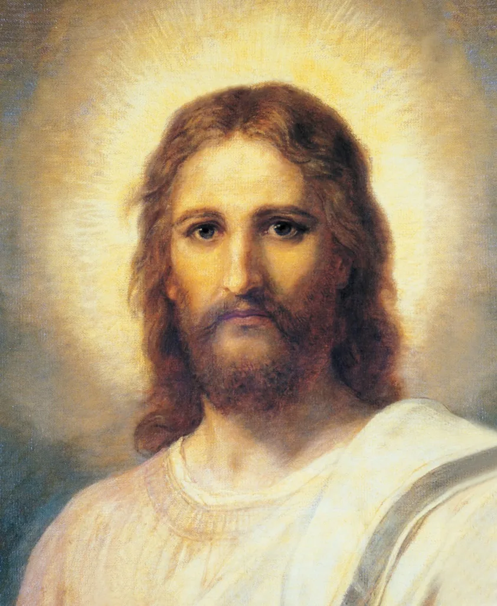
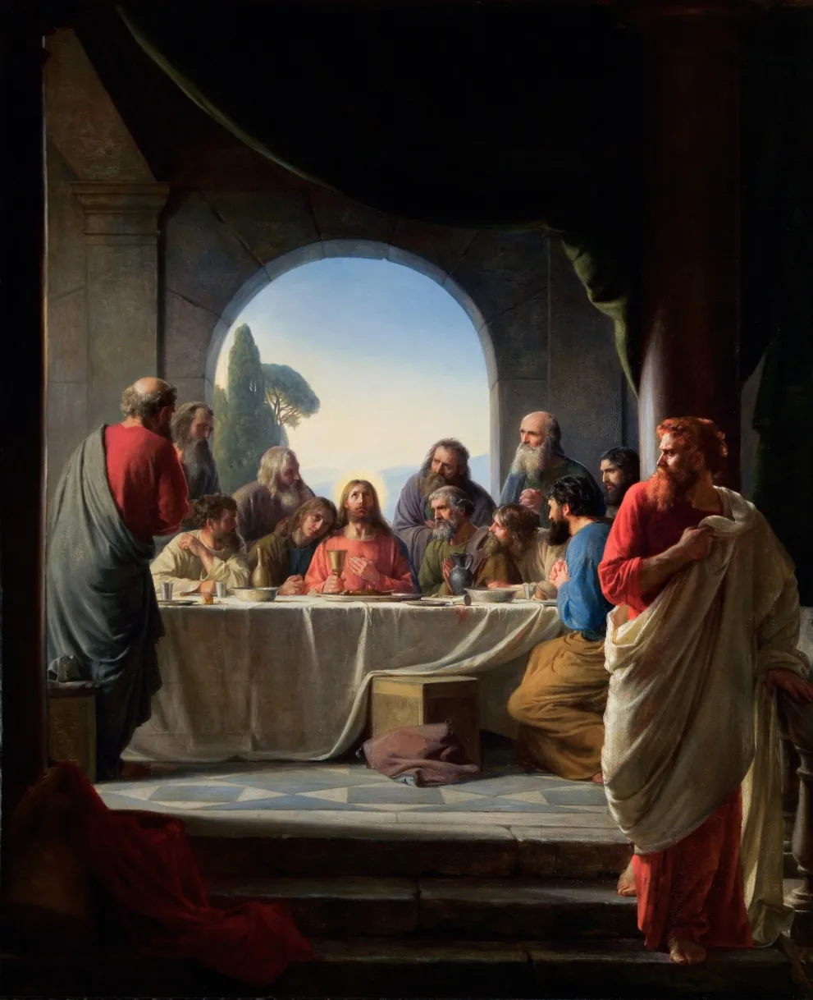
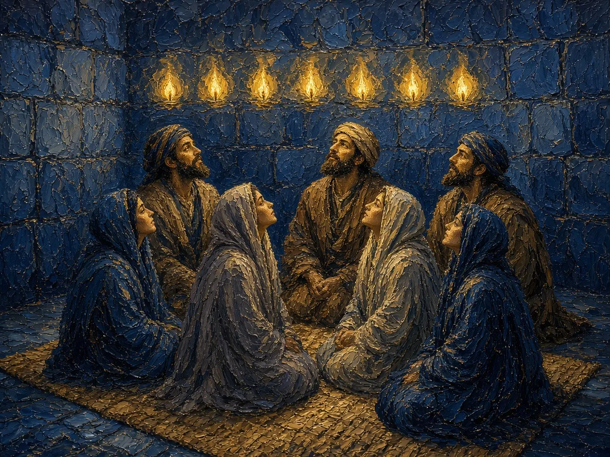
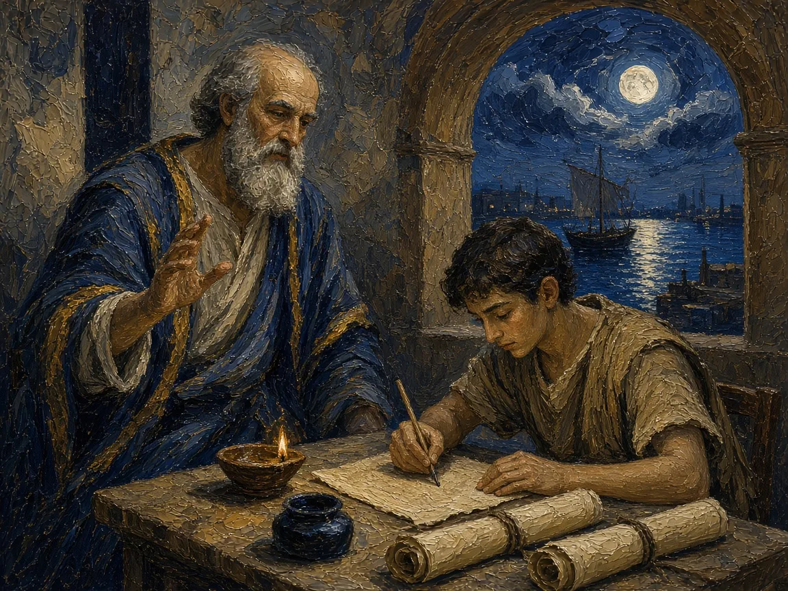
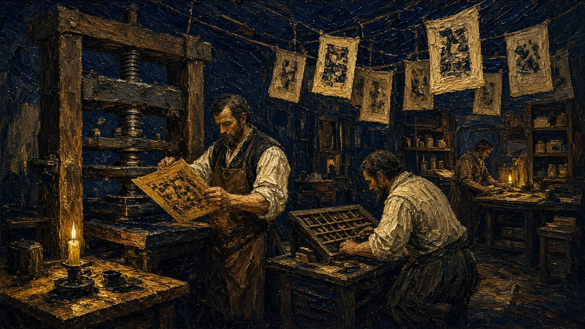
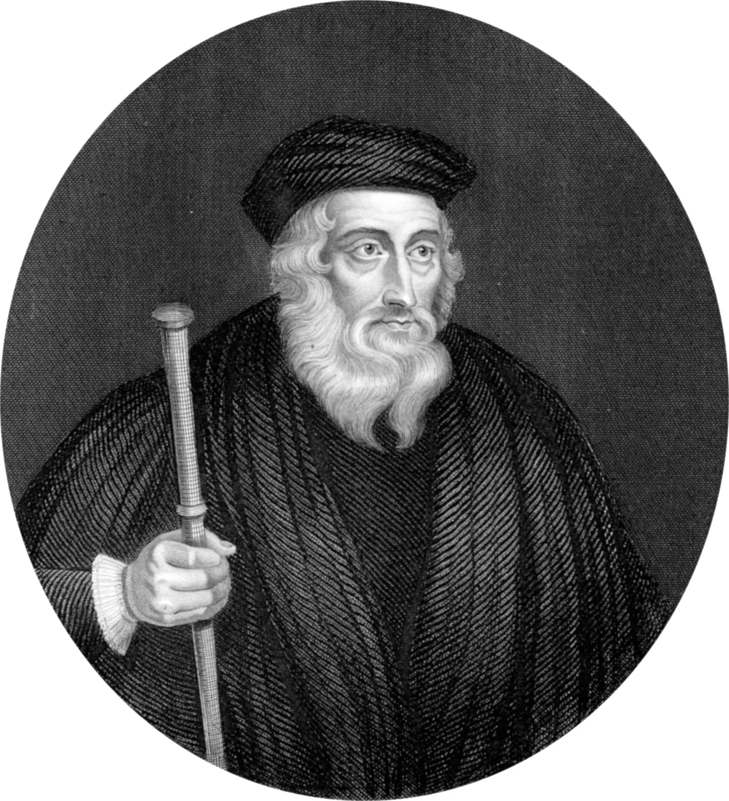
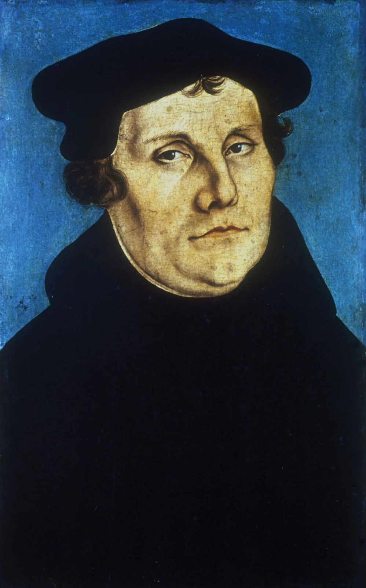
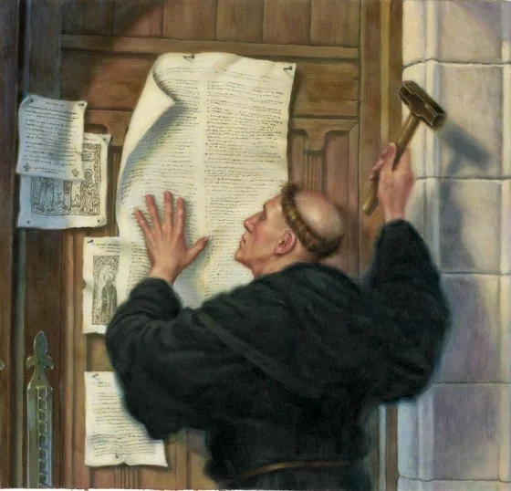

From fishermen in Galilee to a global family of churches
Background image: AI-generated painting of an empty wooden fishing boat with a bare mast, its nets spilling over the side, resting by a rocky shore of the Sea of Galilee at sunrise; the sun rises between dark hills and lays a path of gold light across the water under an indigo and gold sky.
Lecture Roadmap
Three Historical Transformations
1 · Jesus Movement
A Jewish renewal movement becomes a missionary church centered on the crucified and risen Jesus.
2 · Empire & Institution
Persecuted communities grow, spread beyond Rome, and become entwined with imperial power.
3 · Christendom & Reform
Eastern and western churches diverge; medieval institutions face reform, fragmentation, and modernity.
Guiding question: How did a Jewish movement around Jesus become a global family of churches?
Section I
From Jesus Movement to Earliest Church
How did Jesus’ life, death, and resurrection become the center of a new missionary community?
Background image: AI-generated painting of a tomb cut into a rocky hillside at dawn: a large round stone has been rolled aside from the doorway, golden light fills the chamber and falls on white linen cloths lying on a stone ledge inside, and wildflowers grow in front, with hills under a gold and purple sky.
Names: Christ, Christian & Christianity
Christ
Greek Christos translates Hebrew messiah: “the Anointed One.”
Christian
A nickname first used at Antioch for Jesus’ followers (Acts 11:26).
Christianity
The religion based on Jesus Christ’s life and teaching: a “daughter religion” of Judaism.

Portrait of Christ in the style of Heinrich Hofmann (19th century); image from the original deck
Jesus of Nazareth was Jewish; Christians share Israel’s scriptures and one God, but claim that Jesus is the Messiah.
×
Messiah
Hebrew mashiach, “anointed one.” Israel’s kings and priests were anointed with oil. The Greek translation is Christos, which became “Christ.”
Still from a Bible film clip in the original deck (the clip itself was not preserved)
The Passion: The Final Week
Jesus’s entry into Jerusalem at Passover time was the prelude to a final crisis
After a last supper with his disciples, he was betrayed by Judas Iscariot and was arrested
These events are known as the Passion (suffering)
The next five slides follow the story with short Bible film clips

The Last Supper, Carl Bloch (1876), public domain; image from the original deck
×
Passion
From Latin passio, “suffering.” Christians use it for the suffering and death of Jesus, from Gethsemane to the cross.
The Last Supper (John 13:1–35)
At supper Jesus wraps a towel around his waist and washes his disciples’ feet, a servant’s job. Then he gives them a new commandment: love one another as I have loved you.
Still from the Bible Videos clip The Last Supper | John 13 (The Church of Jesus Christ of Latter-day Saints)
Jesus Is Condemned Before Pilate (Matt 27:1–2, 11–25)
The Roman governor Pontius Pilate questions Jesus, offers to release a prisoner, and gives way to the crowd. He washes his hands: “I am innocent of this man’s blood” (Matt 27:24).
Still from the Bible Videos clip Matthew 27 | Jesus Is Condemned Before Pilate | The Bible (The Church of Jesus Christ of Latter-day Saints)
Jesus Is Scourged and Crucified (Matt 27:26–50)
Roman soldiers flog Jesus, mock him with a crown of thorns, and lead him out to Golgotha. He is crucified between two men. Mark records his cry: “My God, my God, why have you forsaken me?” (Mark 15:34).
Still from the Bible Videos clip Jesus Is Scourged and Crucified | Matthew 27 (The Church of Jesus Christ of Latter-day Saints)
Jesus Is Laid in a Tomb (Matt 27:57–60)
That evening a rich disciple, Joseph of Arimathea, asks for the body, wraps it, and lays it in his own new tomb cut in the rock. He rolls a great stone across the door.
Still from the Bible Videos clip Matthew 27 | Jesus Is Laid in a Tomb | The Bible (The Church of Jesus Christ of Latter-day Saints)
Jesus Is Resurrected (John 20:3–18)
Early on Sunday, Mary Magdalene finds the stone moved. Weeping in the garden, she mistakes Jesus for the gardener, until he says her name: “Mary!” She runs to tell the others, “I have seen the Lord” (John 20:16–18).
Still from the Bible Videos clip John 20 | Jesus Is Resurrected | The Bible (The Church of Jesus Christ of Latter-day Saints)
Forty Days, Then the Ascension
Acts says the risen Jesus appeared to his followers “during forty days,” then left them on the Mount of Olives.
When he had said this, as they were watching, he was lifted up, and a cloud took him out of their sight.
Acts 1:9 (NRSV)
Christians believe that God raised Jesus from the dead and that he ascended to the Father.
Pause & Reflect
Reading Guide · Review Question 3 (The Life, Death, and Resurrection of Jesus Christ)
What happened during the final events of Jesus’s earthly life and immediately afterward?
Look back: The Passion: The Final Week · The Last Supper · Condemned Before Pilate · Scourged and Crucified · Laid in a Tomb · Resurrected · Forty Days, Then the Ascension
From a few dozen followers in Jerusalem to house churches across the Roman world.
Background image: AI-generated painting of five travelers in first-century robes, mantles, and head coverings, one with a shoulder bag, walking away from the viewer down a paved stone road toward a low gold sun; on the right a walled city rises on a steep hill, crowned by a columned temple, under an indigo sky.
Spotlight On: The Earliest Church
The Origins of Christianity: From Jesus Cult to Universal Religion (30 A.D. to 100 A.D.) · Seek Learning · Open on YouTube ↗
Pentecost and the Earliest Church
Pentecost
At the Jewish festival of Shavuot: wind, fire, and inspired speech.
Proclamation
Peter announces Jesus’s resurrection and calls listeners to repentance and baptism.
Community
Teaching, prayer, shared meals, mutual aid, and “breaking bread.”

AI-generated image: the disciples, women and men, at Pentecost (Acts 2)
Often called the “birthday of the Church,” though Jesus’s followers still understood themselves as Jews.
Paul and the Gentile Mission
Conversion and calling: persecutor turned missionary after an experience of the risen Christ
Gentile inclusion: non-Jews may join without circumcision or full observance of Jewish identity markers
Justification by faith: salvation is God’s gift, received through trust rather than earned status
Networks of churches: journeys and letters connect house congregations across the Roman world

AI-generated image: Paul dictating a letter to a scribe (see Romans 16:22)
Paul believed Israel’s promises were opening to the nations, not that he was abandoning Israel’s God.
From Jewish Movement to Distinct Church
The separation was gradual, uneven, and contested.
Jesus Movement Jewish disciples debate the meaning of Jesus within Jewish life→Growing Divergence Gentile membership, Torah practice, and claims about Jesus reshape identity→Distinct Communities After 70 CE, churches and emerging rabbinic Judaism increasingly develop apart
Later Christian anti-Judaism turned family arguments into harmful stereotypes and persecution; Christianity’s Jewish roots must remain visible.
Pause & Reflect
Reading Guide · Review Question 1 (The Earliest Church)
What role did the Apostle Paul play in the development of the early church?
Look back: Paul and the Gentile Mission · From Jewish Movement to Distinct Church
What did Christianity gain—and risk—when it moved from persecution to political power?
Background image: AI-generated painting of two Roman soldiers seen from behind, in segmented plate armor, dark red cloaks, and gold-crested helmets, carrying oval dark-blue shields painted with a gold Chi-Rho, as they look across a river toward a long arched stone bridge at dusk under an indigo and gold sky.
100 – 500 C.E.
The Ancient Period
From scattered house churches to the official religion of the Roman Empire.
Background image: AI-generated painting of the interior of an early basilica: rows of marble columns with carved capitals line the nave under a timber roof, a gold apse mosaic shows Christ enthroned among standing saints, and a crowd of worshippers in late-Roman tunics and colorful mantles stands facing the altar.
Growth of the Church: New Leaders
As the apostles died, local churches developed lasting structures of leadership
Christianity established itself in every large and midsize city in the eastern Roman Empire
Local leadership: episkopos (overseer or bishop) and presbyter (elder)
These leaders did not have authority to speak for the whole church or declare doctrine
×
Episkopos
Greek “overseer,” the source of the English word “bishop” (and of “Episcopal”). Presbyteros, “elder,” gives us “priest” and “Presbyterian.”
Persecution and Martyrs
The growth of Christianity challenged the Roman Empire
It led to increased persecutions and the martyrdom of Christians
… but persecution failed to wipe out the movement
The oftener we are mown down by you, the more in number we grow; the blood of Christians is seed.
Chi-Rho with alpha and omega in an early Christian mosaic; image from the original deck
×
Chi-Rho (☧)
A monogram of the Greek letters chi (X) and rho (P), the first two letters of Christos. Lactantius describes it as the sign on Constantine’s shields.
From Toleration to Imperial Religion
313 Edict of Milan: legal toleration and restoration of Christian property→325 Council of Nicaea→330 Constantinople becomes the new capital→380 Theodosius I makes Nicene Christianity the empire’s official religion
If Christianity was going to be used to justify power, the emperor needed the Church to speak with one voice
Often summarized as “One God, one Church, one Emperor” (a modern summary, not a documented saying)
How did shared Christian roots produce distinct eastern, western, Protestant, and modern trajectories?
Background image: AI-generated painting of a dim church interior: a long gilded screen of arched icons, with Christ in the center, Mary beside him, and saints on either side, rises behind a row of small lit candles; red glass lamps hang on chains, and incense smoke drifts past a dark stone column across a polished floor.
500 – 1500 C.E.
Byzantine, Medieval, and Renaissance Christianity
A thousand years in which East and West grew apart.
Background image: AI-generated painting of a Gothic cathedral at dusk, its tall pointed spires and carved west front lit gold, with a great glowing rose window above three arched doorways; pilgrims in hooded cloaks, some with walking staffs, cross a wet cobbled square toward the doors as the sunset fades over a distant town.
Eastern Orthodox
Constantine moves the capital east and names the new capital Constantinople
This sets up the seeds of division of Empire and Church
The Western (or Latin) part of the Empire lasts only about 150 more years (until 476)
The Eastern (or Byzantine) part lasts more than 1,000 years (until 1453)
The Bishop of Constantinople assumes the role of primus inter pares
West
Churches shaped by the Latin language and culture.
East
Churches shaped by Greek language and culture.
The churches of each half of the empire develop independently.
×
Primus inter pares
Latin, “first among equals.” The Ecumenical Patriarch of Constantinople has a place of honor among Orthodox bishops, but not authority over them like the pope’s in the Catholic Church.
The Iconoclasm Controversy
Emperor Leo III (from the 720s) commands the destruction of images of Jesus, Mary, and the angels (traditionally linked to Muslim criticism of Christianity; the causes were more complex)
The action is condemned by the Pope and the western church
An eastern council (754) condemns the use of icons as idolatry
The Second Council of Nicaea (787) affirms the use of icons
Icons are venerated, not worshiped; that distinction shaped Orthodox worship ever after.
The Filioque Controversy & the Schism
East and West held on to the fiction of one universal church, at least until the Pope and the Patriarch excommunicated each other!
The Papacy assumed supremacy as the successor to Peter; the Patriarch assumed supremacy as the Bishop of the Imperial Capital
Eastern bishops rejected the filioque (“and from the Son”) inserted into the Creed
Schism of 1054: Pope and Patriarch mutually excommunicate each other
The schism between Eastern Orthodox and Roman Catholic is complete
×
Filioque
Latin, “and [from] the Son.” Western churches added it to the Nicene Creed: the Spirit “proceeds from the Father and the Son.” The creed of 381 says only “from the Father.”
Institutions of worship, learning, and authority expand after Rome’s political collapse.
Papacy
The bishop of Rome claims authority through succession from Peter.
Monasteries
Prayer, hospitality, agriculture, education, and manuscript preservation.
Scholasticism
Anselm and Aquinas use reasoned argument to clarify Christian doctrine.
New Institutions
Universities, cathedrals, and mendicant orders reshape urban religious life.
The medieval Church was simultaneously a spiritual community, political power, landholder, school system, and provider of social care.
The Crusades · from 1095
In 1095 Pope Urban II called on western knights to march east and take Jerusalem. Thousands sewed cloth crosses on their clothes and went.
Armed pilgrimages promoted by popes and rulers
Violence against Muslims, Jews, and Eastern Christians
A long legacy in Christian-Muslim relations
Christian institutions could inspire learning and beauty while also becoming entangled with coercion and political ambition.
The Renaissance · 1300s–1500s
Humanism returns to classical texts and original languages
Church patronage produces major art and architecture
Printing, nationalism, and criticism prepare the way for reform

AI-generated image: a printing workshop of the early 1500s
1500 – 1600 C.E.
Reformation in the Western Church
Textbook section 11-2E: how calls for reform split the Western Church.
Background image: AI-generated painting of a sixteenth-century town square with half-timbered houses and a church spire: a man in a dark cap and coat reads aloud from a large printed sheet beside a stone fountain topped by a statue, while townspeople, women in white head coverings and men in caps, gather close to listen.
Corruption in the Western Church
By the 16th century, the Church had become wealthy, powerful, and (many said) corrupt.
Feudal Ties
Connection to feudal monarchies: land ownership, tithes, and corvée (unpaid) labor.
Papal States
The pope ruled a territory in central Italy as a prince.
The “Bad Popes”
Some Renaissance popes lived like worldly princes.
Land Rich, Cash Poor
Vast estates, but building projects needed cash.
Paying for Pardon? Indulgences
To rebuild St. Peter’s Basilica in Rome, Pope Leo X offered indulgences to those who gave alms. In 1517 the preacher Johann Tetzel brought the campaign to the edge of Saxony.
remission of part or all of the temporal and especially purgatorial punishment that according to Roman Catholicism is due for sins whose eternal punishment has been remitted and whose guilt has been pardoned
Merriam-Webster, “indulgence,” sense 4
×
Indulgence
In Catholic teaching, a reduction of the temporal punishment still due for sins that have already been forgiven. Medieval fundraising could make it sound like buying forgiveness, which the Church did not officially teach.
Reform Prior to Luther: John Wycliffe
John Wycliffe (c. 1330–1384), English theologian
Promoted the first complete translation of the Bible into English
Argued the church should give up its possessions and return to evangelical poverty
Attacked doctrines such as transubstantiation

John Wycliffe, 19th-century engraving; image from the original deck
×
Transubstantiation
Catholic teaching that in the Eucharist the bread and wine become the body and blood of Christ in their substance, while their appearances remain. See Lecture 3.
Martin Luther
Born to a prospering mining family in Germany
Educated at one of Germany’s leading universities (Erfurt)
Following a terrifying experience in a thunderstorm, he abandoned the study of law and joined a monastery
Earned a Doctor of Theology in 1512 and became professor of biblical studies

Martin Luther, workshop of Lucas Cranach the Elder (1520s), public domain; image from the original deck
The Indulgences Controversy
Luther objected to teachings that the purchase of indulgences granted forgiveness of sins
He drafted a set of propositions to open an academic debate on indulgences: the Ninety-five Theses
Tradition says he nailed them to the door of Wittenberg Castle Church on October 31, 1517
He attacks not only the corruption, but the underlying doctrine as well

Luther posting the Ninety-five Theses, a later illustration of the traditional story; image from the original deck
After the Reformation: 1600–1800
Confessional conflict gives way to new forms of devotion, reason, and toleration.
1600s Catholic and Protestant states enforce confessional identities; religious wars expose the cost of coercion→Late 1600s Pietism stresses conversion, Bible study, disciplined devotion, and practical service→1700s The Enlightenment tests inherited authority through reason, evidence, and criticism
Religious toleration and church-state separation gain support in parts of Europe and North America.
Christianity Confronts Modernity
The nineteenth century produced both adaptation and resistance.
Historical Criticism
Scholars analyze biblical texts through language, sources, authorship, and historical setting.
Science
Geology and evolutionary theory challenge some traditional readings of creation.
Reform
Christians organize movements concerning slavery, poverty, education, labor, and temperance.
Global Missions
Christianity expands worldwide, often entangled with European and American imperial power.
Modern Christianity is shaped by arguments over what may change and what must remain authoritative.
Pause & Synthesize
Looking Back: Four Transformations
Jesus Movement→Missionary Church→Imperial Christianity→Global Traditions
At each transition, what changed—and what claims or practices preserved continuity?
Beyond the lecture
From Persecution to Nicaea
Optional Independent Study
Slides AB, AE, and AF tell the story of persecution and Constantine in a few bullets. The mini-lecture tells it as a story: Pliny’s letter, Perpetua’s prison diary, the Great Persecution, the Milvian Bridge, the Edict of Milan, the Council of Nicaea, and Theodosius.